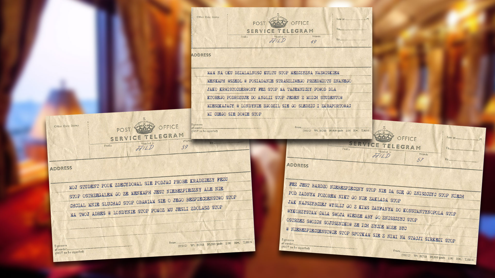

sierpień 1893 rok, Londyn, White Chappel, Durward Street (Buck's Row) 5
Sesja IV, 16.10.2023
Profesor Julius Smith, profesor 30 lat.
Pokój Pani Grim.
Lekarz w pokoju Nill Hops, w sile wieku.
Leżący w łóżku, bardzo chudy meżczyzna noszący fez jest wycieńczony, potwornie śmierdzi.
Anabell Le Bon (Lekarz)
Mia Banks (Przestępca)
Teodor Meadowcroft (Podróżnik)
Kamerdyner Barnaby Mitchell,
U Pani Grim, wynajął pokój mężczyzna w cylindrze o imieniu: Lic (Litz?).
Mężczyźni w fezach przyprowadzili tego mężczyznę leżącego w łóżku: Matthew Poock, 24 lata, a wygląda
jak starzec. Profesor go rozpoznał. Znał go jego znajomy Profesora Denira z Konstantynopolu. On wie
coś na temat organizacji/kultu i profesor wie, że musi się z nim skontaktować.
Przez 3 dni dochodziły hałasy z pokoju, jednak Lic zapłącił by nie zwracać na to uwagi. Czwartego
dnia dało się słyszeć krzyki z pokoju, wezwana policja nie dała wiary zeznaniom. Mężczyźni w fezach
i Lic uciekli nim policja zjawiła się na miejscu. Umierający mężczyzna wypowiedział imię profesora,
dlatego policja przywiozła go tutaj.
Mężczyzna w łóżku okazało się wcale nie nosi fezu. Ten fez jest wrośnięty w jego czaszkę. Sam fez
wygląda na wilgotny, pokryty zmieniającymi się znakami, a co najgorsze, szepczący.
O tym wszystkim dowiedziałem się post factum.
Sam dotarłem z Barnabeym zaraz po tym jak rozpętało się na miejscu piekło.
Mężczyzna umarł, światła zgasły, a trup rzucił się na doktora. Teodor wystrzelił i przez przypadek
trafił w doktora, prosto w głowę. Stwór z guzem na głowie w kształcie fezu, które jakby naciągało mu
całą skórę. Fez zszedł z głowy mężczyzny.
Dotarłem w czas, aby uratować wszystkich. Martwy żywy potwór rzucił się na Teodora. Wystrzeliłem
kilkukrotnie powalajac stwora.
Pozostali próbowali zniszczyć fez, ale okazało się, że nie da się go zniszczyć tak łatwo jak by się
spodziewali.
[...]
Spotkanie u profesora w domu, aby przeżyć noc. Podobno po miejście kręcili się ludzie w fezach
szukajac czego. Nasze przeczucie, mrowienie z tyłu głowy dawało nam znać, że powoli zbliżają się do
domu profesora.
[...]
Spotkanie w kawiarence. Profesor dostał odpowiedź na telegramy. Profesor poprosił nas abyśmy
wyruszyli do Konstantynopola, aby dostarczyć Fez w miejsce, w którym będziemy mieć szansę go
zniszczyć.
